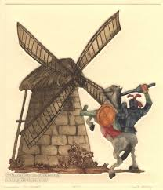
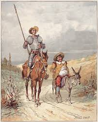
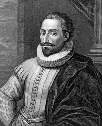

Bienvenidos al Proyecto Don Quijote
Un proyecto cultural dedicado a explorar la obra más influyente de la literatura española.
Resumen del Proyecto
Este proyecto explora la relevancia cultural de Don Quijote en Hispanoamérica como modelo de nacionalismo, líder espiritual contra el imperialismo y símbolo del intelectualismo a través de muchas épocas.



Palabras Importantes
- Antiguo
- Muy viejo; de hace mucho tiempo.
- Vestigiales
- Cosas que quedan del pasado y que casi ya no se usan.
- Quijotismo
- Ser idealista y soñador, como Don Quijote; luchar por ideales nobles aunque sean difíciles.
- Guerra Hispano-Estadounidense
- La guerra de 1898 entre España y los Estados Unidos.
- Volumen
- Un libro, especialmente un libro largo o grande.
- Permear
- Entrar y extenderse poco a poco por todas partes.
- Nacionalismo
- Amor fuerte y orgullo por el propio país.
- Imperialismo
- Cuando un país domina o controla a otros países.
- Influyente
- Que tiene mucho poder para cambiar ideas, personas o cosas.
- Abulia
- Falta de voluntad o energía para hacer cosas.
- Gallardía
- Valor, nobleza y elegancia en el comportamiento.
- Estrenar
- Presentar por primera vez algo nuevo, como una obra de teatro o un filme.
- Caballero
- Un hombre noble y valiente, especialmente en el contexto medieval.
Escucha el Podcast
Escucha mi discusión sobre Don Quijote y su relevancia cultural.
Transcripción
Introducción: Hola, yo me llamo Nathaneal. Este podcast es una parte de mi proyecto cultural sobre Don Quijote y las adaptaciones modernas. Voy a contarte algo de la relevancia y la importancia cultural de Don Quijote en la historia de Hispanoamérica. Ha sido un modelo de nacionalismo, un líder espiritual contra el imperialismo, y un símbolo del intelectualismo a través de muchas épocas.
2: Aunque tiene lenguaje antiguo y a veces palabras vestigiales, Don Quijote todavía tiene un impacto hoy en día. Para entender más bien cuán influyente ha sido, es importante saber con qué gente y cuáles movimientos el tomo se ha asociado. En la Cuba y España de 1898, fue un ideal de quijotismo. Las políticas, ideas, y tristemente el ascenso del nacionalismo no serían como fueron si Cervantes no hubiera escrito el Don Quijote casi tres siglos antes. Como dijo Fernando Ortiz, un filósofo de Cuba: "Nos hace falta, como a vosotros, resucitar a don Quijote, a nuestro ideal…" Ortiz, sospechoso del panhispanismo como una forma disfrazada de neocolonialismo, urgió a los cubanos a "desmontar de Clavileño" — el caballo de madera de la ilusión colonial — y "volver a montar Rocinante," regresando a ideales auténticos impulsados por su propia voluntad nacional.
3: En estos tiempos, solo hacía poco los EE.UU. y España tuvieron la Guerra Hispano-Estadounidense, y por eso Ortiz comentó sobre la nueva forma de imperialismo bajo los EE.UU. {sonidos de guerra} En este contexto Quijote funciona diferente como un líder espiritual. Rubén Darío, en su cuento "D.Q." de 1898, imaginó a un Quijote atrapado por "el gran diablo rubio de cabellos lacios" — los Estados Unidos — que se lanza a un abismo antes de rendirse. Era un conflicto entre dos culturas muy diferentes: el mundo latino de los ideales contra el mundo anglosajón del pragmatismo material. Miguel de Unamuno dijo que el quijotismo era la "religión nacional" de España, y Ángel Ganivet describió la enfermedad española como abulia — una falta total de voluntad — y decía que la cura era la voluntad apasionada del Caballero.
4: Eso es un ejemplo que no es tan reciente, pero aún se puede ver la relevancia hoy en políticas y también en el arte. Como dice María Fernández en su tesis, "Desde la publicación de la primera parte, no ha habido un período de más de treinta años en que no… apareciese alguna composición musical sobre la novela." Y las adaptaciones modernas ya no son simplemente cómicas. Exploran la dimensión trágica y existencial, con temas como la muerte, la locura, y la justicia social. El caso es que el Don Quijote se puede encontrar en cualquier cosa, también en los EE.UU. Hay obras de teatro como Don Quijote en Manhattan por Els Joglars, Morir cuerdo y vivir loco de Fernando Fernán Gómez, y óperas como El retablo de maese Pedro de Manuel de Falla. Más que eso, hay una película que se llama The Man Who Killed Don Quixote con el actor Adam Driver. Y Don Quijote no es simplemente un volumen largo para estudiar, ni un ideal para políticos, ni tampoco un chiste para las películas — es un puente al pasado, una manera de tener relación con personas de todas épocas.
Conclusión: Don Quijote es posiblemente la obra de literatura más reconocida del mundo. Dicho esto, también es una idea que ha permeado la cultura y la política de las Américas, especialmente Hispanoamérica. Y, si quieres aprender más, puedes explorar la página de web.
Contexto de Don Quijote
Que necesitas saber antes de este proyecto.
Contexto
Don Quijote es un libro de Miguel de Cervantes sobre un hombre que lee muchas novelas de caballeros y se vuelve loco. Sale a vivir aventuras con su amigo Sancho Panza, creyendo que es un caballero valiente.
Contexto de quien es Miguel de Cervantes (1547–1616)
Miguel de Cervantes Saavedra fue el escritor español autor del "Ingenioso Hidalgo Don Quijote de la Mancha," cuya obra ha permeado la cultura y la política de las Américas durante más de cuatro siglos.
Temas principales
- Nacionalismo: Miguel de Unamuno llamó al quijotismo la "religión nacional" de España, y la Generación del 98 elevó a Quijote como modelo de regeneración nacional.
- Gallardía y Género: La figura del Caballero encarna virtudes como la nobleza, el idealismo, la justicia y el heroísmo frente a la abulia y el pragmatismo material.
- Innovación de Arte: Las adaptaciones modernas exploran la dimensión trágica y existencial de la novela con temas como la muerte, la locura y la justicia social.
Adaptaciones de Don Quijote
La influencia de Don Quijote se extiende a través de siglos y medios artísticos.
Cine y televisión
The Man Who Killed Don Quixote
Película protagonizada por Adam Driver que lleva la figura de Don Quijote al cine contemporáneo. Demuestra que la novela sigue siendo un puente al pasado para audiencias de todas las épocas.
Teatro
Un Quijote Bien (Mal) Contado
"Un Quijote Bien (Mal) Contado," dirigida por Cointa Galindo, se estrenó en el Gaviota Teatro de Querétaro, México. La obra es una reinterpretación del "Ingenioso Hidalgo" de Miguel de Cervantes Saavedra, pero sin el lenguaje de Cervantes que a veces es excluyente. La directora dice que todo el mundo tiene un Quijote dentro de su ser, una parte de nosotros mismos que busca la aventura. Ella quiere que la obra se modernice para acercarla a los jóvenes. Ante ese reto, ha incluido partes de la obra original, pero con aspectos de la cultura pop actual.
Música
El retablo de maese Pedro (1923)
Ópera de cámara compuesta por Manuel de Falla con un libreto basado directamente en el texto de Cervantes. Es una adaptación musical reconocida internacionalmente de Don Quijote.
Arte visual
Ejemplo de arte
El arte visual ha mantenido viva la imagen de Don Quijote y Sancho Panza durante más de cuatro siglos, convirtiéndolos en uno de los emblemas más reconocibles de la cultura hispánica.
Fuentes y Referencias
- Cervantes, Miguel. Don Quijote de la Mancha. [Agregar detalles de la edición]
- Referencias de investigación del podcast...
- Otras fuentes académicas o creativas...
- Elizondo, Andrea. "De La Mancha a Querétaro: Don Quijote estará en La Gaviota Teatro." Diario de Querétaro, Organización Editorial Mexicana, https://oem.com.mx/diariodequeretaro/cultura/de-la-mancha-a-queretaro-don-quijote-estara-en-la-gaviota-teatro-28416284.